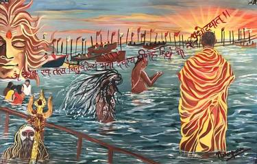
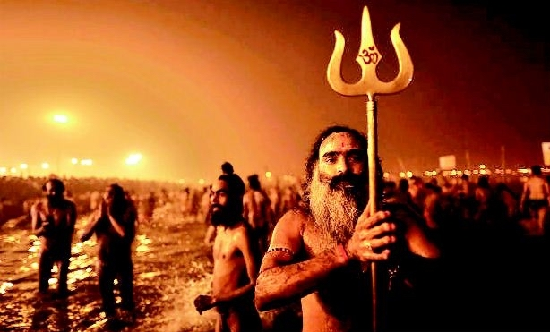
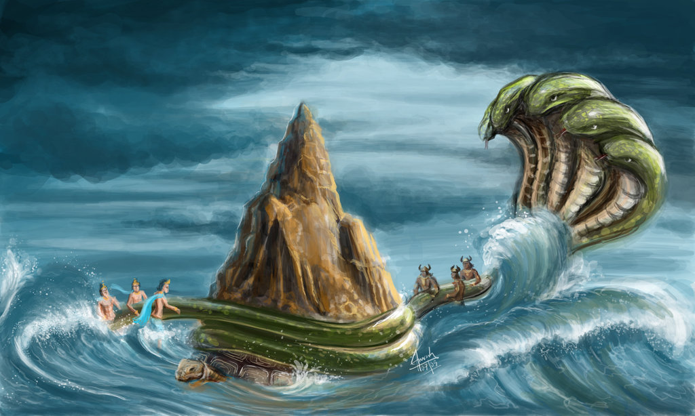

----------

Kumbh Mela, also called Kumbha Mela, in Hinduism, religious festival that is
celebrated four times over the course of 12 years, the site of the observance
rotating between four pilgrimage places on four sacred rivers—at Haridwar on the
Ganges River, at Ujjain on the Shipra, at Nashik on the Godavari, and at Prayag.
Meaning:

In Hinduism, the Kumbh Mela, also known as Kumbh Ka Mela,
is a religious festival celebrated four times in 12 years.
The place of worship revolves around the four holy places on the four
holy rivers—at Haridwar on the Ganges River, at Prayag (Allahabad) at the
convergence of the Ganges, the Jamuna, and the Saraswati, at Ujjain on the
Shipra River, and Nashik on the Godavari River. The observance of each site
relies on a separate set of astrological positions of the Sun, Moon, and Jupiter,
the most consecrated time when these positions are in complete sync. The Kumbh Mela
in Prayag attracts millions of pilgrims in particular. Also, a great Kumbh Mela is
held in Prayag every 144 years, most recently in 2001. One of the largest festivals
in the world, "The Kumbh Mela," lasts a few weeks which attracts more than 200
million people from all over the world.
According to Hindu mythology, Kumbh Mela is the most significant religious festival of Hindus celebrated four times across 12 years. The festival's location revolves around the four pilgrimage sites located on the banks of the holy river. Earlier in 2003-04, Kumbh Mela was held at Nashik-Trimbakeshwar.
According to Hindu mythology, Kumbh Mela is the most significant religious festival of Hindus celebrated four times across 12 years. The festival's location revolves around the four pilgrimage sites located on the banks of the holy river. Earlier in 2003-04, Kumbh Mela was held at Nashik-Trimbakeshwar.
History:

The Kumbh Mela has its religious significance, which is held every 12 years.
Undoubtedly it is the largest gathering of faith where people from all over
the world take part and bathe in the holy or holy river. The phrase Kumbh
Mela consists of two words Kumbh and Mela, but it is also the Hindi name
for the sign of Aquarius. The name 'Kumbh' is derived from the immortal pot
of nectar with which the gods and demons fought, described in the Puranas
(ancient Vedic scriptures). As we all know, Mela is a Sanskrit word meaning
'gathering' or 'meeting.'
The ancient history of Kumbh Mela relates to the days when gods and demons unitedly made the nectar of immortality as delineated by hearsay. The gods and demons acceded to getting the job done together and decided to share half of the nectar of immortality each. The Gods and demons then meet on the shores of the Milky Way, located in the cosmic realm. The agitation of the sea of milk made a lethal poison that Lord Shiva drank without being affected. After overcoming many obstacles, Dhanvantari appeared many years later with the nectar of immortality. It is perfectly said that Kumbh Mela is the largest religious and cultural human gathering in the world. For 48 days, millions of pilgrims bathed in the holy river. Devotees from all over the world mainly take part in this mela like sadhus, sadhvis, ascetics, pilgrims, etc.
The ancient history of Kumbh Mela relates to the days when gods and demons unitedly made the nectar of immortality as delineated by hearsay. The gods and demons acceded to getting the job done together and decided to share half of the nectar of immortality each. The Gods and demons then meet on the shores of the Milky Way, located in the cosmic realm. The agitation of the sea of milk made a lethal poison that Lord Shiva drank without being affected. After overcoming many obstacles, Dhanvantari appeared many years later with the nectar of immortality. It is perfectly said that Kumbh Mela is the largest religious and cultural human gathering in the world. For 48 days, millions of pilgrims bathed in the holy river. Devotees from all over the world mainly take part in this mela like sadhus, sadhvis, ascetics, pilgrims, etc.